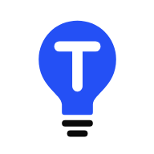
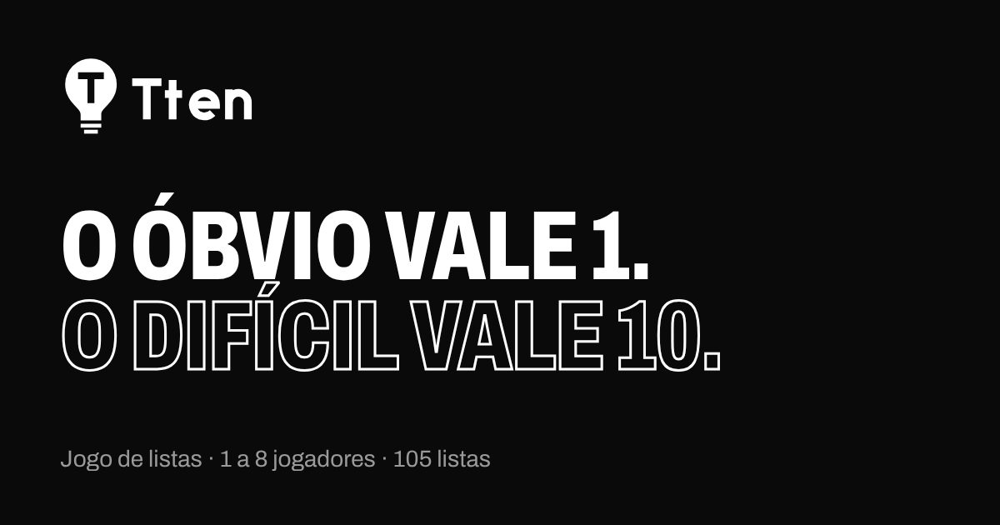

Manual da marca · versão 1.0
Identidade visual
Atualizado em 8 de outubro de 2026
Topzi é o jogo de listas em que o óbvio vale 1 e o difícil vale 10. Este guia junta tudo o que dá a cara do Topzi: logo, símbolo, cores, letras, peças da interface, ícones e o jeito de escrever. Use como referência para o site, redes sociais, apresentações e qualquer material novo.
1. Essência da marca
O conceito
Toda lista vai do óbvio ao difícil. O número do item é a pontuação: lembrar do 1º é fácil e vale pouco, lembrar do 10º é o que separa quem sabe de quem chuta. A marca inteira gira em torno dessa ideia: chegar no topo da lista.
Assinatura
O óbvio vale 1.
O difícil vale 10.
Usada no topo do site, no compartilhamento e em materiais. Sempre em duas linhas, a segunda em vermelho.
Personalidade
- Competitivo, mas sem humilhar: a graça é a disputa.
- Jogo de turma: feito para sala, churrasco, grupo do WhatsApp.
- Direto: regra que se explica em uma frase.
- Brasileiro: futebol, novela, comida e frase de mãe.
2. Logo
"TOPZI" em letras grossas e geométricas, com o O mais baixo (dá ritmo, como uma lista que sobe e desce) e o Z em vermelho. É a assinatura principal: topo do site, imagem de compartilhamento e materiais.
Versão principal · fundo creme · brand/logo.svg
Versão negativa · fundo preto · brand/logo-dark.svg
Área de proteção e tamanho mínimo
Deixe em volta da logo um espaço livre igual à altura do "O" (marcado como x). Nada de texto, borda ou outro elemento dentro dessa área.
Tamanho mínimo: 96 px de largura na tela (no site ela aparece com 26 a 34 px de altura) e 25 mm no impresso. Abaixo disso, use o símbolo 10.
Não faça
Esticar ou achatar
Trocar as cores
Sombra, brilho ou degradê
Fundo colorido ou poluído
Logo sobre o vermelho (o Z some)
Girar ou inclinar
3. Símbolo 10
O "10" é a pontuação máxima de uma lista de 10: o item mais difícil. O pedaço vermelho no topo do zero é o topo da lista, o lugar que todo mundo quer alcançar. Ele aparece onde falta espaço: ícone do app, aba do navegador, avatar de rede social e na tela inicial, acima do título.

Fundo creme · simbolo.svg

Fundo preto · simbolo-escuro.svg


Ícones · mínimo de 16 px
Regra de cor: no símbolo, só o topo do zero é vermelho. Na logo, só o Z. O vermelho nunca aparece em mais de um ponto da mesma peça.
4. Cores
Três cores fazem a marca. O creme e o preto são os fundos; o vermelho é o destaque: o que é importante, o que se clica, o que vale ponto.
Proporção sugerida: 60% fundo (creme ou preto), 30% superfícies e texto, 10% vermelho. O vermelho não vira fundo de página inteira (a exceção é a tela de vitória).
Cores da interface
No código, as cores são variáveis em style.css. O modo escuro troca só os valores; os nomes continuam os mesmos.
| Variável | Claro | Escuro | Uso |
|---|---|---|---|
--bg | #FFF4DE | #171717 | Fundo da página |
--surface | #F7E7C8 | #232120 | Cartões, chips, itens escondidos |
--line | #E8D5B0 | #38342F | Bordas, divisórias, campos |
--fg | #171717 | #FFF4DE | Texto principal |
--muted | #6B6151 | #B5AA93 | Texto de apoio, legendas |
--accent | #FF4D3D | #FF4D3D | Botões, destaques, Time Vermelho |
--accent-ink | #D93A2B | #FF6B5D | Vermelho para texto pequeno |
--accent-soft | #FFE1D4 | #3B1F1A | Fundo de aviso e de item escolhido |
--on-accent | #171717 | #171717 | Texto sobre o vermelho (sempre preto) |
--bad | #B8261A | #FF8A7F | Erros e chute errado |
--team1 | #171717 | #4A4540 | Time Preto |
| sucesso | #2BA84A | #2BA84A | Online, mensagem de "deu certo" |
Contraste
| Combinação | Contraste | Pode usar em |
|---|---|---|
| Preto sobre creme | 16,4 : 1 | Qualquer texto |
| Preto sobre vermelho (botão) | 5,5 : 1 | Qualquer texto |
--muted sobre creme | 5,6 : 1 | Texto de apoio |
--accent-ink sobre creme | 4,2 : 1 | Rótulos curtos em negrito (categoria, dica) |
Vermelho #FF4D3D sobre creme | 3,0 : 1 | Só títulos grandes, números e formas |
| Vermelho sobre preto | 5,5 : 1 | Qualquer texto |
Texto sobre o vermelho é sempre preto, nunca branco nem creme: o branco no vermelho fica com contraste baixo (3,3 : 1) e foge da marca.
5. Tipografia
Uma família só: Bricolage Grotesque (Google Fonts, gratuita). Ela tem eixo de largura, então a mesma fonte faz os títulos condensados e pesados e o texto corrido confortável. Reserva: Helvetica Neue, Arial.
Títulos · peso 800 · largura 75%
AaBbCc 0123456789
ÓBVIO DIFÍCIL
Texto · peso 400 a 700 · largura 100%
AaBbCc 0123456789
óbvio difícil
Escala
Display2,6 a 5,8 rem · 800 · 75% · maiúsculas · entrelinha 0,95
O difícil vale 10
Título de tela2,2 rem · 800 · 75%
Escolha a lista
Subtítulo1,5 rem · 800 · 75%
A lista completa
Destaque1,1 rem · 400 · cor de apoio
Um jogo de listas para jogar sozinho, contra os amigos ou em equipe.
Texto1 rem · 400 · entrelinha 1,45
Na sua vez, dê um palpite. Acertou o nº 8, ganhou 8 pontos.
Pequeno0,85 rem · 400 a 600
Salvas neste aparelho e, com a conta conectada, também na conta.
Rótulo0,75 rem · 700 · cor de apoio
Tempo por vez
- Maiúsculas só no display (título da tela inicial, revelação do vencedor). No resto, frase normal.
- Números de pontuação e de posição usam sempre a versão condensada e pesada.
- Texto corrido com no máximo uns 65 caracteres por linha.
6. Formas e espaçamento
Tudo é arredondado, sem sombra pesada e sem borda grossa: as peças se separam pela cor de fundo (--surface sobre --bg).
Espaços
- 6 px entre chips e itens da lista · 10 px entre cartões · 16 px de margem lateral no celular e dentro de cartões · 24 a 40 px entre blocos.
- Largura máxima do conteúdo: 800 px, centralizado. Tudo precisa funcionar a partir de 320 px de largura.
- Área de toque mínima: 40 × 40 px.
7. Componentes
As peças abaixo usam as mesmas regras do jogo. Troque o tema do aparelho (claro ou escuro) para ver as duas versões.
Botões
Vermelho = ação principal (uma por tela). Preto = segunda ação forte. Superfície = ações secundárias. Botões são sempre pílulas, texto em peso 700.
Chips, campos e cartões
Chip escolhido fica preto; tamanho de lista escolhido fica vermelho. Campo com foco ganha borda vermelha. Cartão em foco ou com o mouse em cima ganha borda vermelha.
Quadro da lista
É a peça mais importante do jogo. Cada item tem o número (que é a pontuação), o nome e os pontos.
- 1Índia+1
- 2China+2
- 77 pts
- 8B… · 10 letras8 pts
- 9Rússia9 pts
Achado: fundo preto com número vermelho (no modo Times, a cor do time). Escondido: barra no lugar do nome. Dica: primeira letra e tamanho em vermelho. Ninguém achou: borda tracejada, sem fundo.
Colocação e regras
Jogadores. Cada um com nickname e skin.
Acertou o 8º da lista? Ganhou 8 pontos.
Ou joguem juntos: a equipe contra a lista.
Sem medalha de ouro, prata e bronze: 1º vermelho, 2º preto, 3º contorno, do 4º em diante tracejado.
8. Ícones
Ícones de traço, desenhados numa grade de 24 × 24, traço de 1,9, pontas e cantos arredondados, cor herdada do texto (currentColor). O Topzi não usa emoji na interface: tudo que seria emoji vira ícone de traço ou número.
Os ícones das categorias e dos destaques do resultado ficam em js/icons.js; os de interface, direto no HTML e em js/app.js.
9. Movimento e som
- Rápido nos toques: botões e cores mudam em 0,12 s; o tema troca em 0,25 s.
- Com peso nas conquistas: item achado "estoura" (0,5 s, com leve passada do ponto), pódio sobe, coroa e confete no vencedor, rufar de tambor antes do resultado.
- Erro balança: o campo treme rápido (0,35 s) quando o chute está errado.
- Quem pede menos movimento no aparelho (
prefers-reduced-motion) recebe tudo parado. - Som é curto e pode ser desligado no topo da tela; a escolha fica salva.
10. Tom de voz
O Topzi fala como um amigo explicando o jogo na mesa: português do dia a dia, frases curtas, sem jargão. Trata por "você" e chama o grupo de "a turma". É animado na vitória, leve na derrota e nunca debocha de quem errou.
Assim
Acertou o 8º da lista? Ganhou 8 pontos.
Cada um no seu celular. Crie uma sala e mande o código para a turma.
Sem senha: a gente manda um link para o seu e-mail.
Assim não
Parabéns!!! Você obteve 8 pontos na rodada atual 🎉🎉
Inicialize uma sessão multiplayer e compartilhe o identificador.
Autentique-se via magic link para persistir seus dados.
- Verbos no começo dos botões: Jogar, Chutar, Criar sala, Escolher a lista.
- Sem exclamação em excesso e sem emoji. Uma exclamação basta, e só em momento de festa.
- Números em algarismo quando falam de pontos e posições: "nº 8", "10 pontos", "Top 50".
- O jogo existe em português, inglês e espanhol: escreva frases que se traduzem bem, sem gíria muito local nos textos fixos.
11. Aplicações
Imagem de compartilhamento

1200 × 630 px · aparece quando o link é mandado no WhatsApp e nas redes · brand/og-image.png
Redes sociais
Avatar: símbolo 10 no fundo creme, centralizado, com margem de 20%.
Posts: fundo creme ou preto, título no display em maiúsculas, um único destaque em vermelho. Mostre o quadro da lista como peça principal (itens achados em preto, escondidos com barra).
Lista do dia: o resultado compartilhado usa quadradinhos de texto, para funcionar em qualquer aplicativo de conversa.
Vídeos: abertura com o símbolo, corte seco, fecho com a logo e "topzi" no fundo creme.
12. Arquivos
| Arquivo | O que é |
|---|---|
brand/logo.svg | Logo para fundo creme (claro) |
brand/logo-dark.svg | Logo para fundo preto (escuro) |
brand/simbolo.svg | Símbolo 10 para fundo creme |
brand/simbolo-escuro.svg | Símbolo 10 para fundo preto |
brand/favicon.svg, favicon-32.png | Ícone da aba do navegador |
brand/apple-touch-icon.png, icon-192.png, icon-512.png, icon-maskable-512.png | Ícones do app instalado |
brand/og-image.png | Imagem de compartilhamento (1200 × 630) |
style.css (início do arquivo) | Cores, raios e fonte em variáveis, claro e escuro |